Left body edge
读取左踏板；在左外踝提供短提示；可选读取外侧广肌附近的单通道sEMG。
Reads the left pedal, returns a short outer-ankle cue and optionally reads one vastus-lateralis sEMG channel.
左ペダルを読み、左外果へ短い提示を返し、任意で外側広筋付近の単一sEMGを読む。
PAGE 02 · PROTOTYPE & MAKING
不是从零发明每个模块，而是把经过验证的传感、联网、触觉与记录方法，重新组合成一个自行车学习系统。
Do not reinvent every module. Reassemble proven sensing, networking, haptics and logging patterns into a cycling-learning system.
すべてをゼロから発明せず、検証済みのセンシング、通信、触覚、記録方法を自転車学習システムへ再構成する。
直接查看装配说明Open the assembly instructions組立説明へ進む↓01 · THREE SMALL RESPONSIBILITIES
左右脚节点负责靠近身体的传感与振动，中央节点负责踏圈边界、算法、日志和可见指针。无线连接减少旋转区松散线材，也让每个模块可以单独测试。
Foot nodes keep sensing and vibration close to the body. The hub owns revolution boundaries, logic, logging and the visible pointer. Wireless separation reduces loose wiring near rotation and lets every unit be tested alone.
足ノードは身体近くの計測と振動を担当し、中央ノードは回転境界、ロジック、ログ、可視ポインタを担当する。無線分離により回転部の緩い配線を減らし、各単位を個別に試験できる。
读取左踏板；在左外踝提供短提示；可选读取外侧广肌附近的单通道sEMG。
Reads the left pedal, returns a short outer-ankle cue and optionally reads one vastus-lateralis sEMG channel.
左ペダルを読み、左外果へ短い提示を返し、任意で外側広筋付近の単一sEMGを読む。
读取右踏板并提供右侧提示；保持与左节点相同的采样、过滤和故障报告结构。
Reads the right pedal and returns right-side cues with the same sampling, filtering and fault-report structure.
右ペダルを読み右側へ提示し、左ノードと同じサンプリング、フィルタ、障害報告構造を保つ。
接收左右数据，用Hall事件切分完整踏圈，决定提示或保持安静，并把所有决定写入日志。
Receives both sides, segments complete revolutions with Hall events, decides cue or silence and logs every decision.
左右データを受信し、Hallイベントで完全回転を区切り、提示か沈黙かを決め、判断をログへ残す。
02 · COMPONENT LIBRARY
下列商品图来自厂商，只用于本地评审和识别。公开作品集发布前应换成你的实拍；来源按钮仍保留，用来证明器材选择与学习路径。
The following manufacturer images support local review and identification only. Replace them with original build photographs before public publication; retain source links to document selection and learning lineage.
以下のメーカー画像はローカル確認と識別用である。公開前に自分の制作写真へ置き換え、選定と学習経路を示す出典リンクは残す。
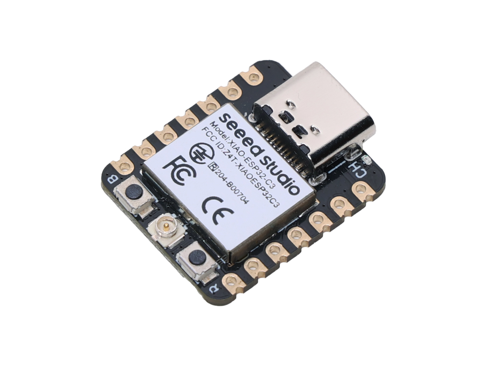
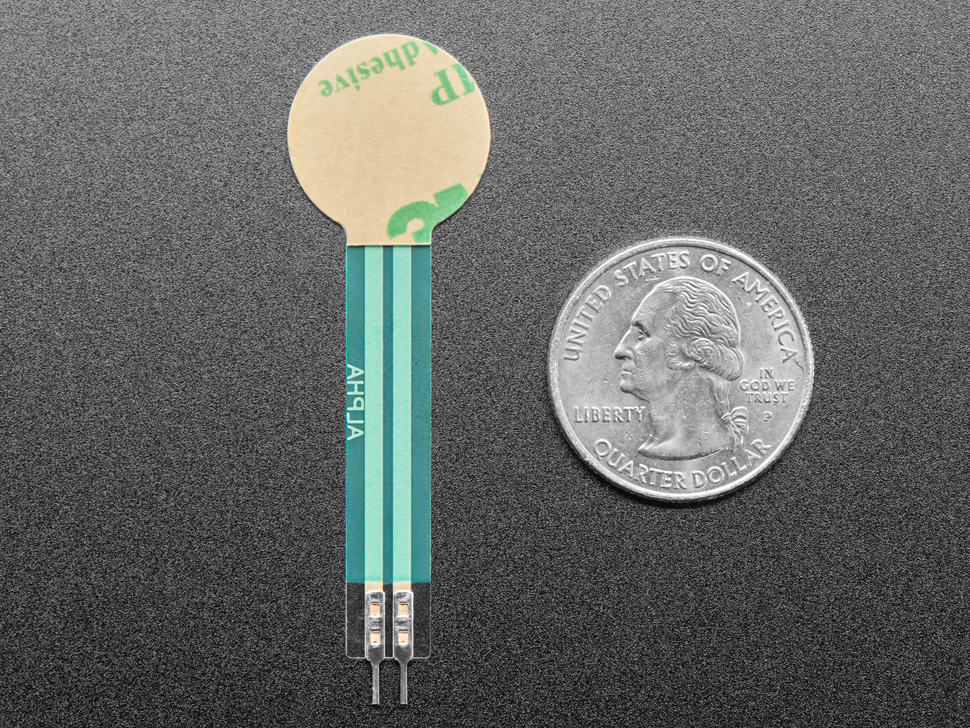
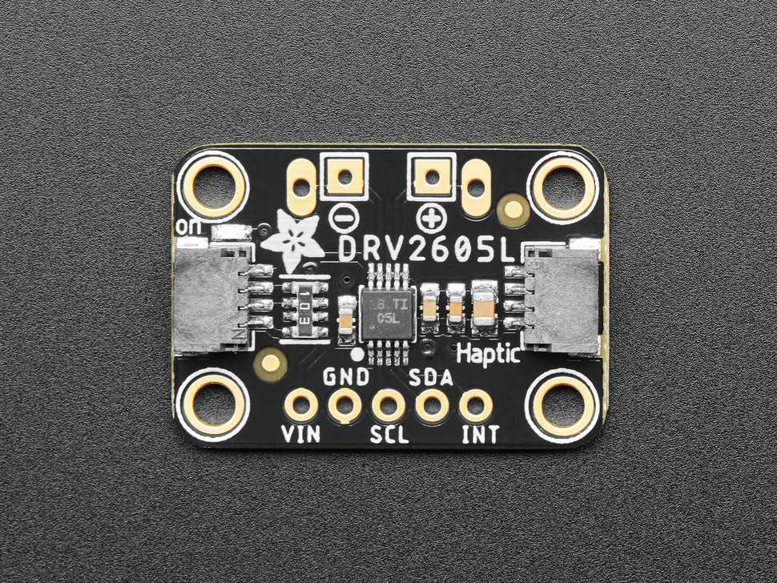
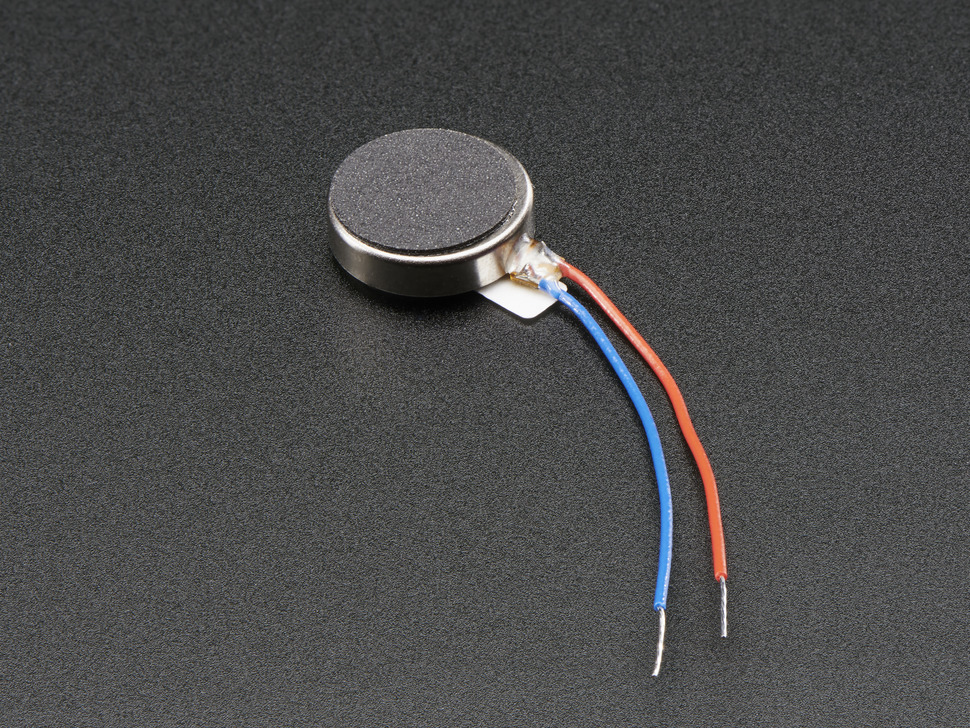
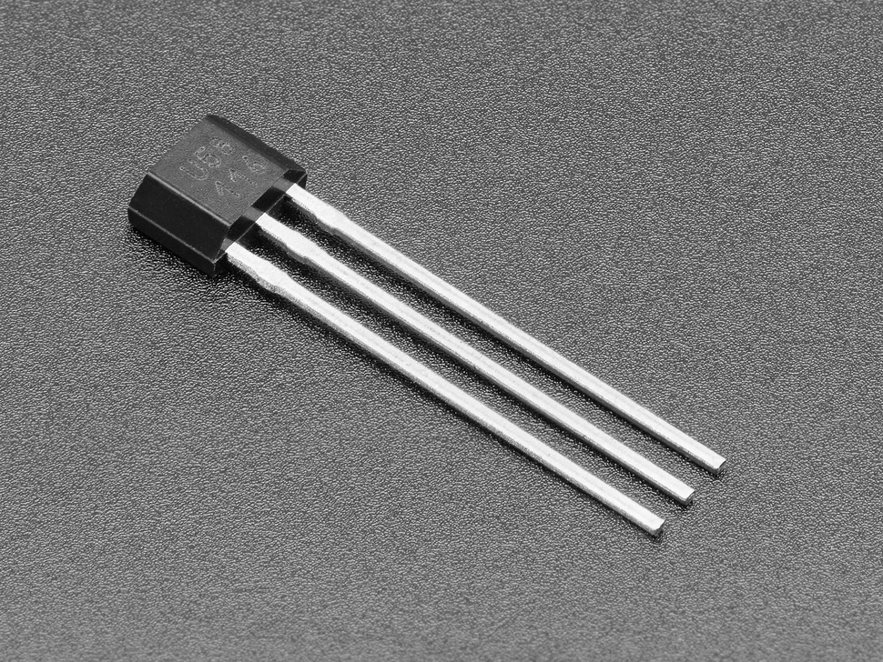
编号会贯穿下面所有装配步骤；先按编号分盘，再开始接线。These IDs repeat throughout the build. Sort the tray before wiring.以下の工程でも同じ番号を使う。配線前に番号ごとに部品を分ける。
三块相同小板降低集成差异；A0–A2优先用于可靠模拟读取。
Three matching compact boards reduce integration differences; prefer A0–A2 for reliable analogue reads.
同じ小型基板3枚で統合差を減らし、安定したアナログ読取にはA0–A2を優先する。
Official guide ↗廉价、薄、容易安装，但只适合相对范围。使用扩力片并逐个校准。
Thin, inexpensive and mountable, but suitable only for relative ranges. Use a force-spreading puck and calibrate each unit.
薄く安価で取付しやすいが相対範囲向け。荷重分散板を使い個別校正する。
FSR guide ↗每圈只产生一个去抖事件，用来决定何时比较左右，而不是估算医疗级功率。
One debounced event per revolution decides when to compare sides; it does not estimate medical-grade power.
1回転につき1回のデバウンス済みイベントで比較時点を決め、医療級パワーは推定しない。
Product reference ↗用现成效果库获得短而稳定的触觉，不把振动时间写进阻塞式延时。
Use the built-in effect library for short stable cues without blocking the sensing loop with delays.
内蔵効果ライブラリで短く安定した提示を作り、遅延で計測ループを止めない。
Haptic guide ↗左右位置负责表达含义；强度只需清楚可辨，不追求越强越好。
Location carries meaning. Intensity only needs to be clearly distinguishable—not maximised.
意味は左右位置が担う。強度は明確に識別できればよく、最大化しない。
Motor reference ↗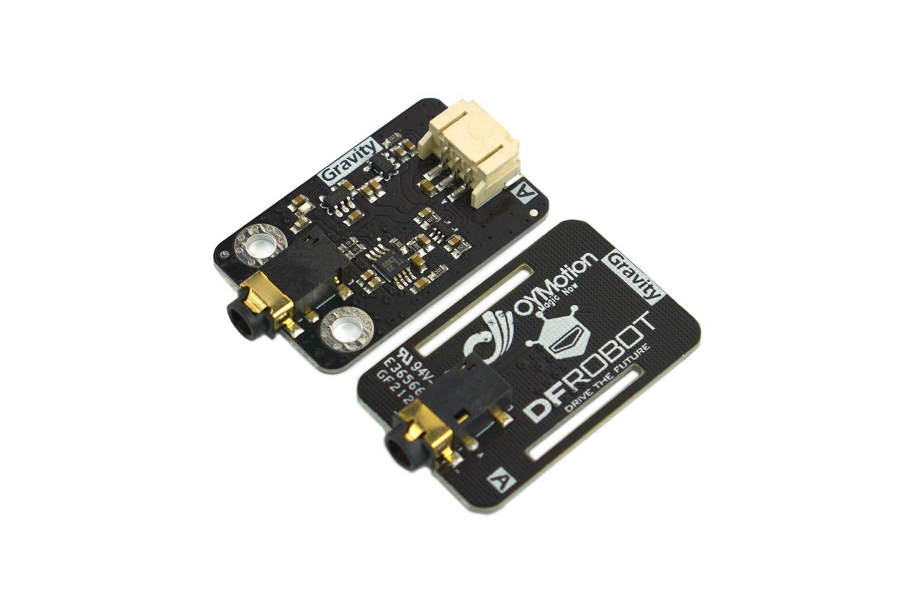
只用于探索局部肌肉活动是否随主动纠正变化；不控制提示，不诊断，也不是整条腿的力量。
Explores whether local muscle activity changes with active correction. It does not control cues, diagnose or represent total-leg force.
能動的修正に伴う局所筋活動の変化のみを探索し、提示制御、診断、脚全体の力の代用にはしない。
Official EMG guide ↗MEASUREMENT CLAIM · complete-revolution relative pressure-contribution proxy
03 · INLINE ASSEMBLY JOURNAL
下面不是成品宣称，而是一套可以被拍照、复查和复现的制作说明。每张卡只做一个动作；“完成检查”通过后才进入下一张。
This is not a claim of finished hardware. It is a build record that can be photographed, checked and reproduced. Each card contains one action; advance only after its completion check passes.
完成ハードウェアの主張ではなく、撮影・確認・再現できる制作記録である。各カードは1つの動作だけを扱い、完了確認を通過してから次へ進む。
输出：三套彼此分开的节点托盘，以及一张零件总览照片。
Output: three separated node trays and one parts-overview photograph.
出力：3つに分けたノードトレイと部品全体写真1枚。
把 P01–P12 全部放在浅色桌面，标签朝上；按零件清单逐项打勾，不把可选 P07 混入核心件。
Place P01–P12 on a light surface with labels facing up. Tick the manifest item by item and keep optional P07 outside the core tray.
P01–P12を明るい面にラベルを上にして並べる。リストを1点ずつ確認し、任意のP07はコア部品と分ける。
一张俯拍照片中能同时看清 12 个编号和数量。
One overhead photograph clearly shows all 12 IDs and quantities.
真上からの1枚で12個の番号と数量が読める。
用三个托盘标记 LEFT、RIGHT、HUB；左右托盘各放 1×P01、1×P02、1×P03、1×P04、1×P05，中央托盘放剩余 P01 与 P06。
Label three trays LEFT, RIGHT and HUB. Each foot tray receives 1×P01, P02, P03, P04 and P05; HUB receives the remaining P01 and P06.
3つのトレイをLEFT、RIGHT、HUBと表示する。左右には各1×P01、P02、P03、P04、P05、HUBには残りのP01とP06を入れる。
左右托盘镜像一致，中央托盘没有脚部振动件。
The foot trays mirror each other and the hub tray contains no body-facing motor.
左右トレイが鏡像で一致し、HUBには身体向けモータがない。
在三块 P01 背面贴 L、R、H 标签，并在标签上画出 USB 端朝向；后续照片始终保持同一方向。
Label the back of the three P01 boards L, R and H, and mark the USB-end direction. Keep that orientation in every later photograph.
3枚のP01背面にL、R、Hを貼り、USB側の向きを描く。以後の写真でも同じ向きを保つ。
不通电也能在三秒内分辨左、右、中央板。
Left, right and hub boards can be identified in three seconds without power.
無通電でも3秒以内に左・右・HUBを識別できる。
为每个模块预留“接线前、接线后、测试结果”三张照片和一行日期、版本、问题记录。
Reserve three images per module—before wiring, after wiring and test result—plus date, version and issue fields.
各モジュールに「配線前・配線後・試験結果」の3枚と日付、版、問題欄を用意する。
M01–M06 都已有空白记录位，不需要事后回忆。
M01–M06 all have empty evidence slots before construction begins.
M01–M06すべてに制作前から空の記録欄がある。
数量不一致、板子身份不清或工作台上出现未标记电池时，不开始接线。
Do not wire if quantities disagree, board identities are unclear or an unlabelled battery is on the bench.
数量不一致、基板識別不明、未表示電池がある場合は配線を始めない。
输出：两只结构一致、尾部受保护、可单独校准的 FSR 模块。
Output: two matching FSR modules with protected tails and independent calibration.
出力：端子を保護し個別校正できる同構造のFSRモジュール2個。
按踏板受力区裁出两片 EVA 底层和两片软覆盖层；先用纸样确认尺寸，不直接拿 P02 当切割模板。
Cut two EVA bases and two soft covers to the pedal load zone. Confirm dimensions with a paper template; never cut against P02.
ペダル荷重域に合わせEVA底層2枚と軟質カバー2枚を切る。P02を切断テンプレートにせず紙型で確認する。
左右两套叠放后边缘齐平，厚度差肉眼不可见。
The two stacks align at the edges with no visible thickness difference.
左右を重ねたとき縁が揃い、厚さ差が目視できない。
把 P02 感压圆片放在 EVA 中央，柔性尾部朝踏板外侧直线离开；用可移除胶带固定边缘，不覆盖感压圆。
Centre P02 on the EVA and route its flexible tail straight toward the pedal outside. Tape only the edge with removable tape; do not cover the sensing circle.
P02の感圧円をEVA中央に置き、端子をペダル外側へ直線で出す。感圧円を覆わず縁だけを剥がせるテープで固定する。
尾部无折痕，轻提软层时传感器不会横向滑动。
The tail has no crease and the sensor does not slide when the soft layer is lifted gently.
端子に折れがなく、軟質層を軽く持ち上げてもセンサが横滑りしない。
把 P08 扩力片居中放在感压圆上，再盖软层；扩力片直径小于覆盖层并且不压到尾部。
Centre the P08 spreader on the sensing circle and add the soft cover. The spreader stays inside the cover and never presses the tail.
P08分散板を感圧円中央に置き軟質カバーを重ねる。分散板はカバー内に収め端子を押さない。
用同一平底物轻压中心，读数上升；移开后读数回到接近零点。
A light press with the same flat object raises the reading; removal returns it near zero.
同じ平底物で軽く中央を押すと値が上がり、外すとゼロ付近へ戻る。
通过连接器把每只 P02 与 P03 组成分压输入，接到各自 P01 的稳定模拟引脚；标记 FSR-L、FSR-R，不在 FSR 尾部停留焊接。
Use connectors to form each P02/P03 voltage divider and feed a reliable analogue pin on its P01. Label FSR-L and FSR-R; do not dwell with solder on the FSR tail.
コネクタで各P02/P03の分圧入力を作りP01の安定したアナログ端子へ接続する。FSR-L/Rを表示し端子へ長時間はんだを当てない。
同一物体连续压五次，两只模块都产生方向一致的五个峰值。
Five presses with the same object produce five same-direction peaks on both modules.
同じ物体で5回押すと両モジュールに同方向の5ピークが出る。
尾部折叠、扩力片压住尾部、零点持续漂移或移除压力后不回落时，拆开夹层重做。
Rebuild the stack if the tail is folded, the spreader touches it, zero drifts continuously or the value does not fall after unloading.
端子折れ、分散板の端子接触、ゼロの連続ドリフト、除荷後に値が戻らない場合は組み直す。
输出：两个能独立读取压力、播放一次短振动、上报身份的台架节点。
Output: two bench nodes that independently read pressure, play one short cue and report identity.
出力：圧力読取、短い振動1回、識別送信を独立実行する2ノード。
把 P01-L、左侧分压输入和 P04 放在同一面包板；按各板官方引脚图连接 3.3 V、GND、模拟输入、SDA、SCL。
Place P01-L, the left divider and P04 on one breadboard. Connect 3.3 V, GND, analogue input, SDA and SCL using the official pin maps for the exact boards.
P01-L、左分圧入力、P04を同じブレッドボードへ置く。各基板の公式ピン図で3.3 V、GND、アナログ、SDA、SCLを接続する。
万用表确认 3.3 V 与 GND 无短路，USB 端口可随时拔除。
The multimeter shows no short between 3.3 V and GND, and USB remains immediately removable.
テスターで3.3 VとGNDの短絡がなく、USBをすぐ抜ける。
通过 USB 给 P01-L 供电，串口只打印时间、节点 L、原始值和过滤值；按压 P02-L，确认输入变化。
Power P01-L by USB and print only time, node L, raw value and filtered value. Press P02-L and confirm the input changes.
P01-LをUSB給電し、時刻、node L、生値、フィルタ値だけを出力する。P02-Lを押して入力変化を確認する。
静止时曲线平稳，按压时只有 L 通道响应。
The trace is stable at rest and only channel L responds to pressure.
静止時は安定し、押したときLチャンネルだけが反応する。
把 P05-L 接到 P04 的电机输出，先放在桌面软垫上；运行一次短效果后立刻回到静默，不用连续振动。
Connect P05-L to the motor output of P04 and place it on a soft bench pad. Play one short effect, then return immediately to silence; do not run continuous vibration.
P05-LをP04のモータ出力へ接続し柔らかい台上に置く。短い効果を1回だけ再生し直ちに無振動へ戻す。
日志只有一次 CUE-L 事件，振动结束后输入采样继续更新。
The log contains one CUE-L event and pressure sampling continues after the vibration ends.
ログにCUE-Lが1回だけあり、振動後も圧力サンプリングが続く。
按照同一线色、同一摆放方向复制右节点，只把身份改为 R；拍一张左右并排照片，并逐根对照线序。
Copy the right node with the same wire colours and orientation, changing only its identity to R. Photograph both side by side and compare every wire.
同じ線色・向きで右ノードを複製し識別だけRにする。左右を並べて撮影し全配線を比較する。
按左只出现 FSR-L/CUE-L，按右只出现 FSR-R/CUE-R。
Left pressure produces only FSR-L/CUE-L; right produces only FSR-R/CUE-R.
左を押すとFSR-L/CUE-Lのみ、右ではFSR-R/CUE-Rのみが出る。
板子发热、USB 反复断连、振动持续不止、左右串线或 500 ms 无数据后仍可振动时，不进入佩戴测试。
Do not wear the nodes if a board heats, USB resets, vibration sticks on, sides cross or a cue remains possible after 500 ms without data.
発熱、USB再接続、振動継続、左右混線、500 ms無データ後も振動可能な場合は装着試験へ進まない。
输出：手转 20 圈恰好记录 20 个边界事件的 Hall 模块。
Output: a Hall module that records exactly 20 boundaries for 20 hand-turned revolutions.
出力：手回し20回転で境界イベントを正確に20回記録するHallモジュール。
在面包板连接 P06 与 P01-H，串口显示 HALL 0/1；手持磁铁缓慢靠近和离开十次，观察阈值是否稳定。
Connect P06 to P01-H on the breadboard and print HALL 0/1. Move the magnet slowly in and out ten times and observe repeatability.
P06とP01-Hをブレッドボード接続しHALL 0/1を表示する。磁石を10回ゆっくり近づけ離し再現性を見る。
十次动作得到十次清楚切换，静止时不会自行跳变。
Ten movements produce ten clear switches with no spontaneous change at rest.
10回の動作で10回明確に切り替わり、静止中は変化しない。
把 Hall 传感器固定在 P11 静止框架，远离脚和曲柄；手转曲柄，用可移除夹具寻找一次稳定触发的位置。
Fix the Hall sensor to stationary P11 structure, away from feet and crank. Hand-turn the crank and use a removable holder to find one stable trigger position.
Hallセンサを足とクランクから離れたP11静止部へ固定する。手回しし仮固定具で安定して1回反応する位置を探す。
慢速完整转一圈只发生一次状态变化，传感器本体不进入旋转弧。
One slow revolution causes one state change and the sensor body stays outside the rotation arc.
低速1回転で状態変化は1回、センサ本体は回転弧外にある。
确认位置后使用主固定件，再加独立的第二保险；在旁边画定位线，之后任何移动都能从照片看出。
After position is confirmed, add the primary mechanical fixing and an independent secondary restraint. Draw an alignment mark beside it.
位置確定後、主固定に加え独立した二次保持を行い、横に位置線を描く。
轻拉主固定时第二保险仍保持磁铁，定位线没有偏移。
A gentle pull on the primary fixing leaves the secondary restraint holding the magnet and the alignment mark unchanged.
主固定を軽く引いても二次保持が磁石を保ち位置線がずれない。
加入去抖后，用记号笔标记起点，手转 20 个完整踏圈；同时人工报数并保存时间戳日志。
After debouncing, mark a start point and hand-turn 20 complete revolutions while counting aloud and saving timestamps.
デバウンス後に開始点を表示し、声で数えながら完全回転20回を手回ししタイムスタンプを保存する。
人工 20 圈与日志 20 个事件完全一致，没有双计数和漏计。
The manual count of 20 exactly matches 20 logged events with no double or missed count.
手数え20回とログ20イベントが一致し、二重・欠落がない。
磁铁没有第二保险、传感器进入旋转弧、手转测试出现 19 或 21 个事件时，不通电踩踏。
Do not power pedalling if the magnet lacks secondary restraint, the sensor enters the rotation arc or 20 turns log 19 or 21 events.
磁石の二次保持なし、センサが回転弧内、20回で19/21イベントの場合は通電ペダリングしない。
输出：能把左右包、Hall 边界、提示原因和故障状态对齐的完整踏圈日志。
Output: complete-revolution logs aligning both packets, Hall boundaries, cue reasons and fault states.
出力：左右パケット、Hall境界、提示理由、障害状態を揃えた完全回転ログ。
让 L、R 节点发送 node ID、序号、时间、过滤压力和 fault；H 只显示最近一包，不先计算平衡。
Have L and R send node ID, sequence, time, filtered pressure and fault. H displays the latest packets without computing balance yet.
L/Rからnode ID、連番、時刻、フィルタ圧、faultを送り、Hはまだバランス計算せず最新パケットを表示する。
左右序号分别递增，关掉任一节点后对应 age 持续增加。
Left and right sequences increase independently; switching one node off makes only its age increase.
左右の連番が独立増加し、片方を切ると対応ageだけが増える。
两个 Hall 事件之间累加左右过滤值；第二个边界到达后才计算 Lshare 与 Rshare，并清空下一圈缓存。
Accumulate filtered left and right values between Hall events. Compute Lshare and Rshare only at the next boundary, then clear the next-cycle buffers.
Hallイベント間で左右フィルタ値を積算し、次の境界でのみLshare/Rshareを計算して次周バッファを消去する。
一圈中途改变压力不会立即触发提示，日志只在圈边界新增一行。
A mid-cycle pressure change does not cue immediately; the log adds one row only at a boundary.
回転途中の圧変化では即時提示せず、境界ごとにログ1行だけ追加する。
先用个人基线确定容许带；只有连续多圈同方向越界才发出一次 LEFT 或 RIGHT，其他状态记录 SILENT。
Set the tolerance band from personal baseline. Emit one LEFT or RIGHT only after multiple consecutive cycles exceed it in the same direction; otherwise log SILENT.
個人基線から許容帯を決め、同方向の逸脱が複数周続いたときだけLEFT/RIGHTを1回出し、他はSILENTと記録する。
单圈异常只被记录，不触发振动；满足连续条件时日志写出明确原因。
One anomalous cycle is logged without vibration; a persistent case writes an explicit reason.
単周異常は記録だけで振動せず、持続条件成立時に明確な理由が残る。
任一关键数据超过 500 ms、Hall 超时、分母接近零或节点上报故障时，H 发送 ALL-OFF，并把失效原因写入日志。
If critical data exceeds 500 ms, Hall times out, the denominator approaches zero or a node reports fault, H sends ALL-OFF and logs the cause.
重要データが500 ms超、Hallタイムアウト、分母がゼロ付近、ノード障害時はHがALL-OFFを送り原因を記録する。
拔掉任一脚节点 USB 后，500 ms 内两侧都进入静默且日志出现故障代码。
Unplugging either foot-node USB silences both sides within 500 ms and produces a fault code.
どちらかのUSBを抜くと500 ms以内に両側が無振動となり障害コードが残る。
任何无来源、无时间戳、无原因字段的提示，或者断包后仍振动，都视为检查点失败。
Any cue without source, timestamp or reason—or any vibration after packet loss—is a failed gate.
出典・時刻・理由のない提示、または欠落後も続く振動は確認点失敗とする。
输出：线材避开旋转区、可一键断电、通过空载检查的完整台架。
Output: a complete rig with rotation clearance, one-action power removal and passed unloaded checks.
出力：回転域を避け、1動作で電源を切れ、無負荷確認を通過した台架。
把左右夹层放到对应踏板受力区，尾部始终朝外；用可拆绑带固定软层，并在尾部连接器前做应力释放环。
Place each stack on its matching pedal load zone with the tail always outward. Use removable straps and add a strain-relief loop before the tail connector.
左右の層を対応ペダル荷重域へ端子を外向きに置く。外せる固定材を使い、端子コネクタ前にストレインリリーフ輪を作る。
手转一圈时尾部、连接器和线材都不靠近曲柄或脚跟路径。
During one hand-turn, tails, connectors and wires remain clear of crank and heel paths.
手回し1周で端子・コネクタ・線がクランクと踵経路から離れている。
P01-L/R 位于鞋面外侧或踝带上方，P05 位于外踝软带；所有硬边与皮肤之间有软层，左右位置以照片和尺寸记录。
Place P01-L/R outside the shoe or above the strap, with P05 on the outer-ankle soft band. Keep a soft layer between every hard edge and skin; photograph and measure both positions.
P01-L/Rを靴外側またはストラップ上、P05を外果の軟質帯へ置く。硬い縁と皮膚の間に軟層を入れ左右位置を写真と寸法で記録する。
坐姿屈伸脚踝时没有硬件顶压、拉扯或线材进入旋转区。
Seated ankle movement causes no hard-edge pressure, pulling or wire entry into the rotation zone.
座位で足首を動かしても硬部圧迫・引張り・回転域への配線侵入がない。
把 P01-H、USB 分线和可选 P07 固定在车架静止部；电源插头朝外，停止控制和拔线位置在旁观者一伸手范围内。
Fix P01-H, USB distribution and optional P07 to stationary structure. Face plugs outward and keep STOP plus power removal within one reach of the observer.
P01-H、USB分配、任意P07を静止部へ固定する。プラグを外向きにしSTOPと電源切断を観察者の手の届く範囲へ置く。
不移动座椅、不跨过曲柄，就能一次动作关闭全部身体输出。
All body-facing output can be stopped in one action without moving the seat or reaching across the crank.
座席移動やクランク越しの動作なしに1動作で身体出力を止められる。
无人踩踏：手转 20 圈，依次模拟左压、右压、断开 L、断开 R、停止 Hall；同步拍摄机械运动、界面和日志。
With nobody pedalling, hand-turn 20 cycles, then simulate left pressure, right pressure, L loss, R loss and Hall loss while recording mechanics, interface and log together.
無人状態で20回手回しし、左圧、右圧、L切断、R切断、Hall停止を順に模擬して機構・画面・ログを同時撮影する。
20 圈=20 事件；左右方向正确；任一故障 500 ms 内 ALL-OFF；录像能把动作与日志逐一对应。
20 turns equal 20 events; sides are correct; every fault reaches ALL-OFF within 500 ms; video aligns each action with its log.
20回=20イベント、左右正確、各障害で500 ms以内ALL-OFF、映像とログが対応する。
任何松线进入旋转区、无法一键停止、左右提示反向、空载检查点未通过时，不让参与者上机。
Do not put a participant on the rig if any loose wire enters rotation, one-action stop fails, cues are reversed or an unloaded gate fails.
緩い線が回転域へ入る、1動作停止不可、左右提示逆、無負荷確認点失敗の場合は参加者を乗せない。
04 · BODY + BICYCLE MOUNTING
传感器、线材和触觉位置都必须固定、可复现、避开曲柄旋转区。每次改变软层、扩力片或绑带位置，都记录为新的原型版本。
Sensors, wires and cue locations must be fixed, repeatable and clear of the crank. Every change to foam, force spreader or strap position becomes a new documented prototype revision.
センサ、配線、提示位置は固定・再現可能で、クランク回転域から離す。フォーム、荷重分散板、ストラップ位置の変更は新しい版として記録する。
扩力片减少尖点压力；尾部进入连接器并做应力释放，不折叠或长时间直接焊接。
The spreader reduces point load. Route the tail into a connector with strain relief; do not fold or dwell with a soldering iron.
分散板で点荷重を減らし、端子はストレインリリーフ付きコネクタへ通す。折り曲げや長時間の直接はんだ付けを避ける。
脚部节点位于鞋面外侧或踝带上方；中央节点、电源和 USB 固定在静止部件，所有松线离开旋转弧。
The foot node sits outside the shoe or above the ankle strap. Hub, power and USB stay on fixed structure; every loose wire leaves the rotation arc.
足ノードは靴外側または足首バンド上へ置く。中央ノード、電源、USBは静止部へ固定し、緩い配線を回転弧から除く。
外侧广肌是可解释的单通道入口，但踩踏由臀肌、股四头肌、腘绳肌、小腿等共同完成。
Vastus lateralis is one interpretable channel, while pedalling combines gluteal, quadriceps, hamstring and calf activity.
外側広筋は解釈可能な1チャンネルだが、ペダリングには臀筋、四頭筋、ハムストリング、下腿筋が共同で働く。
Hall用于踏圈边界；舵机只向旁观者显示当前判断。两者都有软件限位和物理固定。
Hall defines revolution boundaries; the servo only displays the current interpretation to observers. Both need software limits and physical retention.
Hallは回転境界を定義し、サーボは観察者へ現在判断を表示するだけ。両方にソフト制限と物理固定を設ける。
05 · DATA PIPELINE
这条流水线把原始电压逐步变成可解释提示，并在任何关键输入过期时关闭身体输出。
This pipeline turns raw voltage into an explainable cue and suppresses bodily output whenever a critical input becomes stale.
生電圧を説明可能な提示へ変換し、重要入力が古くなれば身体出力を停止する。
Lshare = ΣL / (ΣL + ΣR)Rshare = 1 − LshareCompare the two sides only after one full revolution has been completed.
06 · ASSEMBLE FROM EXISTING WORK
每个来源都明确写出复用、改写和排除的部分，许可证和教程类型也分开。
Every source names what is reused, adapted and excluded, while code licences stay separate from tutorial references.
各出典で再利用、改変、除外を明示し、コードライセンスと教材参照を分離する。
07 · LEARNING SHORTCUTS
这些视频分别承担背景启发、无线通信、FSR接线和鞋垫制作示例。它们是学习资料，不是本项目完成的证据。
These videos provide context, wireless structure, FSR wiring and insole-making examples. They are learning resources—not evidence that this prototype has been built.
背景、無線通信、FSR配線、インソール制作の例として参照する。教材であり、本プロトタイプ完成の証拠ではない。
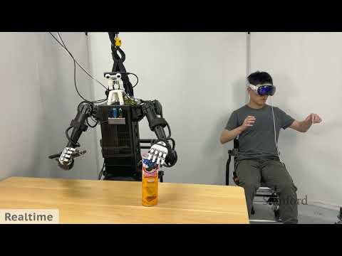
CONTEXTStanford Online
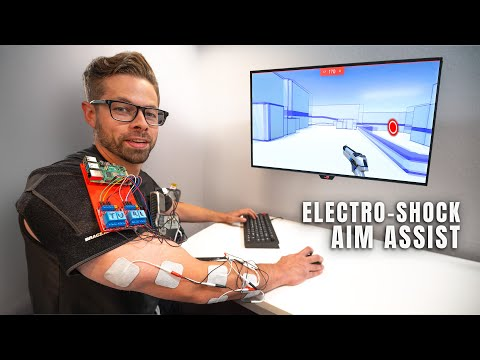
CONTEXT · NOT A BUILD GUIDEBasically Homeless
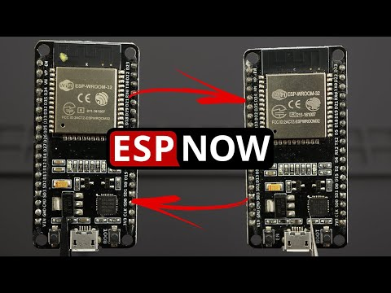
WIRELESSRui Santos
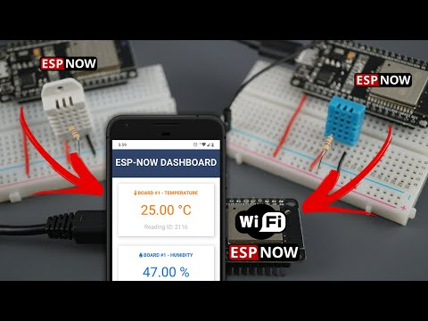
DASHBOARDRui Santos
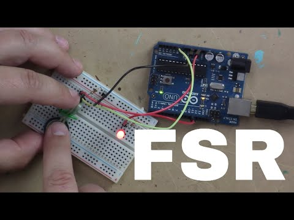
PRESSURE INPUTMarc de Vinck
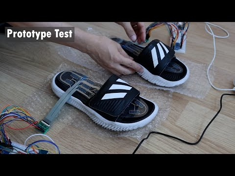
MAKING REFERENCEBrillnova
Video thumbnails © their respective creators / YouTube · linked preview references for local review.
08 · 14-DAY BUILD
时间线按“能否继续”而不是“做了多久”划分。每个检查点没有通过，就先修复当前层，不把错误带进人体测试。
The timeline is divided by permission to continue, not hours spent. If a gate fails, repair the current layer instead of carrying the error into body testing.
時間ではなく次へ進めるかで区切る。確認点に通らなければ現在層を修正し、誤差を人体試験へ持ち込まない。
Wire → zero → equal-weight repeats
GATE · repeated load stays within a documented toleranceEvidence: wiring photo + calibration CSVPacket ID → sequence → stale-data flag
GATE · 500 ms timeout → all haptics offEvidence: packet-loss screen recordingMagnet retention → debounce → event log
GATE · exactly one event per revolutionEvidence: slow-motion video + logLeft / right / silence → comfort check
GATE · at least 8/10 eyes-closed localisationEvidence: localisation tableSame state model → different data source
GATE · identical interface and stop controlEvidence: side-by-side capture60 s baseline → valid cycles → threshold
GATE · no cue from one instantaneous sampleEvidence: annotated timelineConditions → withdrawal → replay → export
CHECK · simulation labels remain visibleEvidence: 90-second demonstration videoCode → wiring → logs → limitations
CHECK · another person can replay the demoEvidence: final folder + READMETEST GATES FIRST
2 × equal-load repeat · 500 ms fail-safe · 1 event/rev · 8/10 localisation
PLANNING SNAPSHOT · 13 Aug 2026
从零开始的预算范围，包括主要零件、耗材、运费和可选打印；正式购买前重新核对库存与价格。
From-zero planning envelope including primary parts, consumables, shipping and optional printing; recheck stock and price before purchase.
主要部品、消耗品、送料、任意印刷を含むゼロからの計画幅。購入前に在庫と価格を再確認する。
DELIBERATE EXCLUSIONS
道路骑行、DIY EMS/TENS/FES、多传感鞋垫、完整FTMS和医疗声称都不进入两周MVP。
Road riding, DIY EMS/TENS/FES, multi-sensor insoles, full FTMS and medical claims stay outside the two-week MVP.
公道走行、DIY EMS/TENS/FES、多点インソール、完全FTMS、医療主張は2週間MVPから除外する。